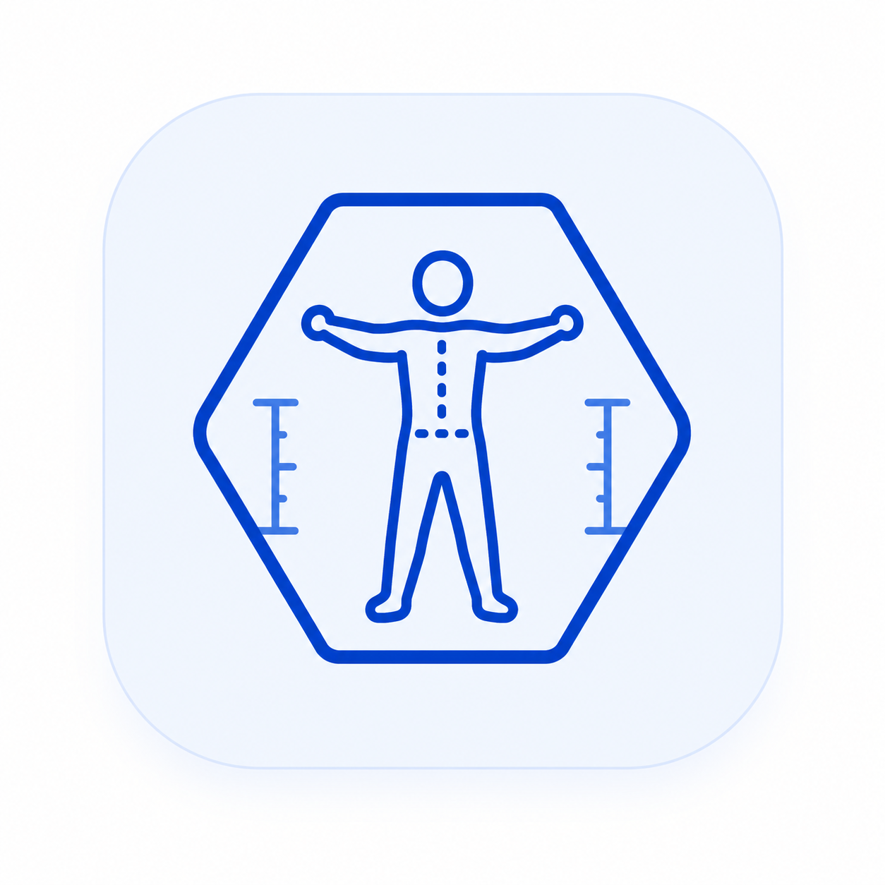

Indicadores
Deportistas, Valoraciones y Asignaciones muestran los registros disponibles. Sistema informa el estado general.

Somatocarta para Android
Guía operativa para administrar deportistas, registrar mediciones antropométricas, interpretar resultados y compartir informes desde un celular Android.
02
El acceso identifica al usuario y habilita únicamente las funciones autorizadas.
Abra Somatocarta desde el menú de aplicaciones.
Digite el usuario y la contraseña asignados. Respete mayúsculas y minúsculas.
Pulse el icono del ojo para comprobar la contraseña; vuelva a pulsarlo para ocultarla.
Seleccione Iniciar sesión y espere la carga del Dashboard.
04
El Dashboard ofrece una lectura rápida de la operación y concentra los accesos más utilizados.
Deportistas, Valoraciones y Asignaciones muestran los registros disponibles. Sistema informa el estado general.
Nueva valoración inicia el registro antropométrico. Ver análisis abre la consulta histórica.
Acceda a valoración corporal, historial y análisis longitudinal sin recorrer el menú.
Administre deportistas, deportes, entidades y sus asignaciones.
05
Este módulo conserva la ficha maestra de cada persona. Sus datos se reutilizan en asignaciones, valoraciones e informes.
Tipo y número de documento, nombres, apellidos, sexo y fecha de nacimiento.
Teléfono, correo, ciudad, dirección, entidad y deporte principal.
Estrato, nivel educativo, institución, programa o profesión y observaciones.
Tome o seleccione una imagen reconocible y confirme el guardado.
06
Registra una o varias tomas antropométricas y calcula indicadores de composición corporal y somatotipo.
Busque al deportista y confirme nombre e identificación.
Registre fecha, estatura, peso y observaciones.
Complete pliegues cutáneos, diámetros y perímetros marcados como obligatorios.
Pulse Agregar medición. Repita si necesita más tomas.
Revise la lista de tomas, avance al resumen y guarde únicamente después de comprobar los valores.
07
Permite revisar cada valoración guardada con sus datos fuente, cálculos, interpretación gráfica e informe PDF.
Abra Análisis de valoración corporal y busque por nombre o ID.
Seleccione una valoración por fecha. Compruebe el deportista y el ID de medición.
Desplácese para revisar IMC, grasa, masa muscular, medidas antropométricas, distribución del peso y somatocarta.
Pulse Compartir PDF y elija Acrobat, correo, Drive, WhatsApp u otra aplicación compatible.
IMC: relación entre peso y estatura.
Distribución: separa masa grasa, muscular, ósea y residual.
Somatocarta: representa la relación entre endomorfia, mesomorfia y ectomorfia.
08
Compara las valoraciones de un mismo deportista para identificar cambios y tendencias en el tiempo.
09
Son catálogos de referencia. Deben existir antes de crear asignaciones o completar el contexto deportivo de una persona.
Busque por nombre, pulse Agregar deporte, registre un nombre único y guarde. Toque una tarjeta para editar o eliminar.
Registre NIT, razón social y los datos institucionales solicitados. Use la búsqueda para localizar y actualizar registros.
10
Relaciona a una persona con el deporte que practica y la entidad a la que pertenece.
Pulse Nueva asignación.
Busque al deportista por nombre o identificación y seleccione el resultado correcto.
Compruebe la ficha resumida del deportista.
Seleccione deporte y entidad; ambos deben existir previamente.
Guarde y confirme que la tarjeta muestre el nombre, deporte y entidad esperados.
Para editar o eliminar, toque la tarjeta. Una persona puede tener varias asignaciones cuando representan relaciones deportivas diferentes.
11
Pulse el icono de salida del encabezado o Cerrar sesión en el menú. La aplicación elimina los datos locales de autenticación y regresa al login.
Desde Dashboard o Login, pulse Atrás en Android. En otras pantallas, Atrás primero recorre el historial de navegación.
Abra Acerca del proyecto para verificar la versión instalada y la información institucional. Este dato es útil al solicitar soporte.
12
Compruebe Internet, usuario y contraseña. Pruebe abrir la dirección del servicio desde el navegador. Si continúa, informe al administrador con la hora y el mensaje mostrado.
Elimine espacios, pruebe con una parte del nombre y confirme el número de identificación. Verifique que el registro exista y que la conexión esté activa.
Revise los campos obligatorios, las unidades y la fecha. Confirme que no exista otra valoración del mismo deportista en ese día.
Instale o habilite una aplicación compatible, como un lector PDF, Drive, correo o mensajería. Repita la acción y elija la aplicación en el selector de Android.
El sistema protege la integridad de los datos. Elimine primero las asignaciones o valoraciones dependientes y vuelva a intentar.
Actualice a la versión más reciente del APK. Cierre y abra la aplicación; si persiste, registre el modelo del celular, la versión de Android y una captura completa.